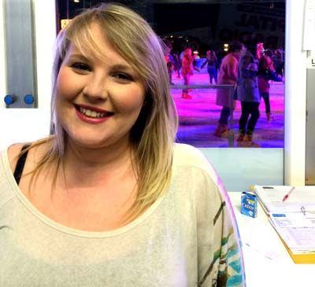
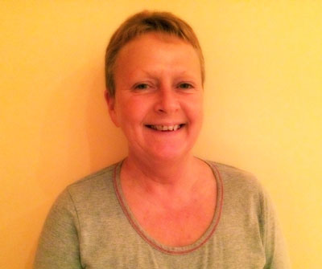

Peter Siddle
22 Feb 2014
The images were taken over a 24 hour period in which I travelled from Manchester to Leeds for a part-time job at a temporary ice rink. Unfortunately I wasn’t able to rent a DSLR camera from the department for this project, therefore all the images were taken on an iPhone.
The images
Portrait (standard)

The temporary ice rink in Leeds City Centre can be seen in the background. This image shows my colleague and friend, Beth. The picture was not edited other than being made slightly darker to remove reflections from the glass.
Portrait (artistic)

I have been staying at home on weekends to work in Leeds. This is a picture of my mum that has been editing using the Orton Effect.
Landscape

After arriving by coach into Leeds from Manchester, I usually walk through Leeds market. I went to the the top of a multi story car park to take this image of the urban landscape. I used the colour pop effect which leaves the colourful roofs of the market stalls while the rest of the image is black and white.
Object

The ice rink is in front of Leeds Civic Hall, the golden owls outside represent the Leeds Coat of Arms. I used an Iris Blur effect to make the sculpture stand out and remove focus from the Civic Hall in the background.
Pop Art

The background image is of graffiti in the northern quarter, Manchester. I took this picture before returning to Leeds. I have included an image of a skater from Leeds which has been edited in a Banksy style stencil. I like the way the graffitied eyes appear to be looking at the skater.
Return to top | Home